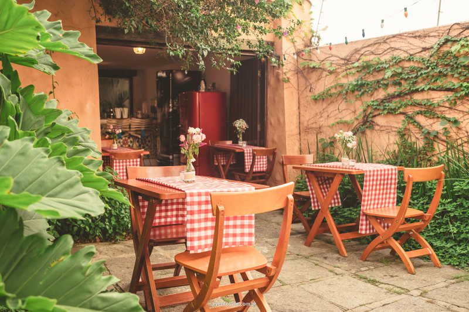
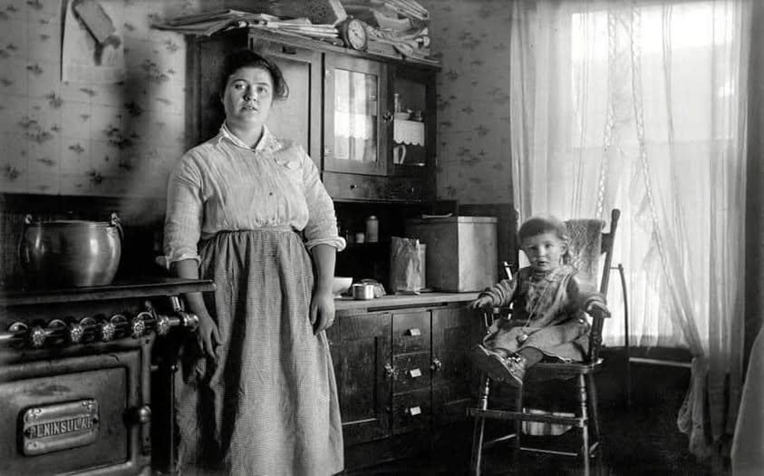

Pasta &
Prosa
Massas artesanais, histórias à mesa
No Pasta e Prosa, comida boa e conversa andam juntas. Inspirado na
tradição italiana com um toque brasileiro, o restaurante oferece massas
artesanais, sabores marcantes e um ambiente acolhedor, perfeito para
reunir amigos, família ou simplesmente aproveitar um bom momento à
mesa. Aqui, cada prato é feito para ser apreciado sem pressa — porque
tão importante quanto comer bem é ter com quem compartilhar.

Para começar a prosa

|
Fettuccine Cremoso della CasaMassa envolvida em molho branco cremoso |
Ravioli al PomodoroMassa recheada em formato artesanal, |

|

|
Spaghetti al Pomodoro con Basilico
Massa ao molho de tomate tradicional |
Por Trás das PanelasChef Marco Bellini
Especialista em massas artesanais, Marco Chef Rafael Duarte
Responsável pelos molhos e finalizações, Giulia Santoro
Apaixonada por detalhes, Giulia cuida da |

|
Onde Tudo Começou
|
 Entre Massas e HistóriasO Pasta e Prosa começou com o Chef Marco Bellini, |
 Raízes que Inspiram Cada ReceitaUm registro simples, mas cheio de significado: |